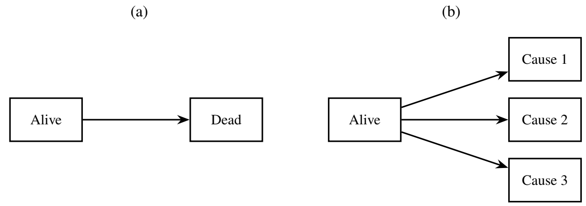

########################################
# Cox-type model for a specific transition
########################################
library(survival)
# Data assumed to be in long format
fit_kj <- coxph(Surv(start, stop, status) ~ covariates,
data = df,
subset = (from == k & to == j))
summary(fit_kj)Chapter 12 - Multistate Modeling of Life History
Slides
Lecture slides here. (To convert html to pdf, press E \(\to\) Print \(\to\) Destination: Save to pdf)
Chapter Summary
Multistate models describe subjects transitioning through a series of discrete states over time (e.g., disease progression), generalizing standard survival models to accommodate multiple types or sequences of events. These models unify frameworks for competing risks, recurrent events, and semi-competing risks by specifying transition intensities between states and estimating quantities such as state occupancy and sojourn times.
Model structure
Let \(Y(t) \in \{0, 1, \ldots, K\}\) denote the state occupied at time \(t\). Some examples are shown in the diagrams below:


Transitions between states are governed by:
Transition intensities
\[ \lambda_{kj}\{t \mid \mathcal{H}^*(t-)\} = \Pr(Y(t+\mathrm{d}t) = j \mid Y(t-) = k, \mathcal{H}^*(t-)), \] where \(\mathcal{H}^*(t)\) is the subject’s full state history up to \(t\).- Markov assumption: \(\lambda_{kj}\{t \mid \mathcal{H}^*(t-)\} = \lambda_{kj}(t)\)—depends only on current state and time.
- Semi-Markov: allows dependence on time since entry into current state.
- Markov assumption: \(\lambda_{kj}\{t \mid \mathcal{H}^*(t-)\} = \lambda_{kj}(t)\)—depends only on current state and time.
Transition probabilities (Markov) \[ P_{kj}(s, t) = \Pr\{Y(t) = j \mid Y(s) = k\}, \] with matrix representation \(\mathbf{P}(s, t)\) that satisfies a product-integral formula: \[ \mathbf{P}(s, t) = \prod_{u = s}^t \{\mathbf{I} + \mathrm{d}\boldsymbol{\Lambda}(u)\}. \]
- Estimation: use discrete versions of transition intensities from observed data.
Sojourn time and state occupancy
\[ \mu_k(\tau) = \int_0^\tau P_k(t) \, \mathrm{d}t, \] where \(P_k(t)\) is the probability of being in state \(k\) at time \(t\).
Nonparametric estimation
The Aalen–Johansen estimator generalizes the Kaplan–Meier and Gray estimators:
Discrete intensity estimator: \[ \mathrm{d}\hat{\Lambda}_{kj}(t) = \frac{\# \text{transitions } k \to j}{\# \text{at risk in state } k}, \] computed at each observed transition time \(t\).
Cumulative probability matrix: \[ \hat{\mathbf{P}}(0, t) = \prod_{t_j \le t} \left\{ \mathbf{I} + \mathrm{d}\hat{\boldsymbol{\Lambda}}(t_j) \right\}. \]
- Recovers Kaplan–Meier for single events and Gray’s estimator for competing risks.
- Produces nonparametric estimates of transition probabilities and mean sojourn times.
- Recovers Kaplan–Meier for single events and Gray’s estimator for competing risks.
Cox-type regression models
Transition-specific covariate effects are modeled via multiplicative intensity models:
Modulated Markov model: \[ \lambda_{kj}(t \mid Z(t)) = \lambda_{kj0}(t) \exp\big(\beta_{kj}^\mathrm{T} Z(t)\big). \]
Modulated semi-Markov model (includes duration in current state): \[ \lambda_{kj}(t \mid Z(t), B(t)) = \lambda_{kj0}(t) \exp\big(\beta_{kj}^\mathrm{T} Z(t) + \gamma_{kj} B(t)\big), \] where \(B(t)\) is the time since entering state \(k\).
These models are estimated using the Cox partial likelihood on data in counting process format.
Example R code
Below is a code snippet for fitting a Cox-type model to a \(k \to j\) transition using coxph() from the survival package.
Here:
start, stop: entry and exit times of the interval at risk;status: indicator of the \(k \to j\) transition (1 if observed, 0 otherwise);from, to: initial and target states.
Repeat for each possible transition; estimation is separate due to likelihood factorization.
Conclusion
Multistate models generalize survival analysis to account for multiple transitions, absorbing states, and intermediate events. Their flexible structure accommodates competing risks, recurrent events, and semi-competing frameworks. Nonparametric estimators like Aalen–Johansen and Cox-type regression models enable estimation of state-specific risks and covariate effects. This approach provides a unified and interpretable framework for analyzing complex disease processes.
R Code
Show the code
###############################################################################
# Chapter 12 R Code
#
# This script reproduces major numerical results in Chapter 12:
# 1. Multi-state analysis of the German Breast Cancer (GBC) Study
###############################################################################
#==============================================================================
# (A) Read and Prepare the Data
#==============================================================================
# (A.1) Load packages
library(survival) # coxph(), Surv()
library(tidyverse) # dplyr + ggplot2 + readr
library(mstate) # msfit(), probtrans(), transMat(), expand.covs()
library(patchwork) # plot composition
library(broom) # tidy() for survfit outputs
library(grid) # unit()
# (A.2) Read GBC multi-state data
gbc_ms <- read.table("Data//German Breast Cancer Study//gbc_ms.txt")
# (A.3) Create a transition label placed after 'to'
gbc_ms <- gbc_ms |>
mutate(
trans = case_when(
from == 0 & to == 1 ~ "1",
from == 0 & to == 2 ~ "2",
from == 1 & to == 2 ~ "3"
),
.after = to
)
# (A.4) Preprocessing
# - Age groups: <=40 => 1; (40,60] => 2; >60 => 3
# - Rescale hormone receptors by 10
# - Convert selected variables to factors
gbc_ms$agec <- (gbc_ms$age <= 40) +
2 * (gbc_ms$age > 40 & gbc_ms$age <= 60) +
3 * (gbc_ms$age > 60)
gbc_ms$prog <- gbc_ms$prog / 10
gbc_ms$estrg <- gbc_ms$estrg / 10
gbc_ms$hormone <- factor(gbc_ms$hormone)
gbc_ms$meno <- factor(gbc_ms$meno)
gbc_ms$agec <- factor(gbc_ms$agec)
#==============================================================================
# (B) Nonparametric Estimation of Transition Probabilities
#==============================================================================
# (B.1) Transition matrix (3-state)
tmat <- transMat(
list(c(2, 3), c(3), c()),
names = c("Remission", "Relapse", "Death")
)
tmat
#> to
#> from Remission Relapse Death
#> Remission NA 1 2
#> Relapse NA NA 3
#> Death NA NA NA
# (B.2) Null Cox stratified by transition (yields Nelson–Aalen by stratum)
cox_fit <- coxph(Surv(start, stop, status) ~ strata(trans), data = gbc_ms)
ms_obj <- msfit(cox_fit, trans = tmat)
# (B.3) Summarize and plot cumulative transition intensities
summary(ms_obj, transitions = 1)
plot(ms_obj, use.ggplot = TRUE) +
scale_linetype() +
scale_color_discrete() +
scale_x_continuous("Time (months)", breaks = seq(0, 84, by = 12)) +
labs(y = "Cumulative intensities", color = NULL, linetype = NULL) +
theme_classic() +
theme(legend.position = "top")
# (B.4) Helper to plot cumulative intensities by hormone subgroup
plot_cumint <- function(hormone_level) {
cox_fit_sub <- coxph(
Surv(start, stop, status) ~ strata(trans),
data = gbc_ms,
subset = (hormone == hormone_level)
)
ms_obj_sub <- msfit(cox_fit_sub, trans = tmat)
plot(ms_obj_sub, use.ggplot = TRUE) +
scale_linetype() +
scale_color_discrete() +
scale_x_continuous("Time (months)", breaks = seq(0, 84, by = 12)) +
scale_y_continuous(breaks = seq(0, 2.5, by = 0.5), expand = expansion(c(0, 0.02))) +
coord_cartesian(ylim = c(0, 2.5)) +
labs(y = "Cumulative intensities", color = NULL, linetype = NULL) +
theme_classic() +
theme(legend.key.width = unit(2, "line"))
}
cumint_h1 <- plot_cumint(1) + ggtitle("No Hormone")
cumint_h2 <- plot_cumint(2) + ggtitle("Hormone")
(cumint_h1 + cumint_h2) +
plot_layout(guides = "collect") &
theme(legend.position = "top",
plot.title = element_text(size = 11))
# (B.5) Save cumulative intensity figure
ggsave("images//multistate_cumint_gbc.eps", width = 8, height = 4.5)
ggsave("images//multistate_cumint_gbc.png", width = 8, height = 4.5)
# (B.6) State-occupancy probabilities
pt_obj <- probtrans(ms_obj, predt = 0)
summary(pt_obj, from = 1, times = seq(12, 72, by = 12))
plot(pt_obj, type = "filled", use.ggplot = TRUE)
plot(pt_obj, type = "separate", use.ggplot = TRUE)
# (B.7) Helper to plot occupancy probabilities by hormone subgroup
plot_pt <- function(hormone_level, tmat) {
cox_fit_sub <- coxph(
Surv(start, stop, status) ~ strata(trans),
data = gbc_ms,
subset = (hormone == hormone_level)
)
ms_obj_sub <- msfit(cox_fit_sub, trans = tmat)
pt_obj_sub <- probtrans(ms_obj_sub, predt = 0)
plot(pt_obj_sub, use.ggplot = TRUE) +
scale_x_continuous("Time (months)", breaks = seq(0, 84, by = 12)) +
scale_fill_viridis_d(NULL, direction = -1)
}
pt_h1_s3 <- plot_pt(1, tmat) + ggtitle("No Hormone")
pt_h2_s3 <- plot_pt(2, tmat) + ggtitle("Hormone")
# (B.8) Four-state version
tmat4 <- transMat(
list(c(2, 3), c(4), c(), c()),
names = c("Remission", "Relapse", "Death in Remission", "Death after Relapse")
)
pt_h1_s4 <- plot_pt(1, tmat4) + ggtitle("No Hormone")
pt_h2_s4 <- plot_pt(2, tmat4) + ggtitle("Hormone")
(pt_h1_s4 + pt_h2_s4) +
plot_layout(guides = "collect") &
theme(legend.position = "top",
plot.title = element_text(size = 11)) &
guides(fill = guide_legend(reverse = TRUE))
# (B.9) Save occupancy figure
ggsave("images//multistate_pt_gbc.eps", width = 8, height = 4.5)
ggsave("images//multistate_pt_gbc.png", width = 8, height = 4.5)
#==============================================================================
# (C) Transition-Specific Cox Models
# States: 0 = Remission, 1 = Relapse, 2 = Death
#==============================================================================
# (C.1) 0 -> 1: Remission to relapse
obj01 <- coxph(
Surv(start, stop, status) ~ hormone + meno + agec + size + prog + estrg +
strata(grade),
data = gbc_ms,
subset = (from == 0 & to == 1)
)
# (C.2) 0 -> 2: Remission to death
obj02 <- coxph(
Surv(start, stop, status) ~ hormone + meno + size + prog + estrg +
strata(grade),
data = gbc_ms,
subset = (from == 0 & to == 2)
)
# (C.3) 1 -> 2: Relapse to death (semi-Markov via time since entry)
obj12 <- coxph(
Surv(start, stop, status) ~ hormone + meno + agec + size + prog + estrg +
strata(grade) + tt(start),
data = gbc_ms,
subset = (from == 1 & to == 2),
tt = function(x, t, ...) { t - x } # time spent in current state
)
#==============================================================================
# (D) Tabulate Model Results (HR, CI, p-values)
#==============================================================================
# (D.1) Extractor
extract_results <- function(obj) {
beta <- obj$coefficients
se <- sqrt(diag(obj$var))
pval <- 1 - pchisq((beta / se)^2, 1)
hr <- round(exp(beta), 3)
ci <- paste0("(", round(exp(beta - 1.96 * se), 3), ", ",
round(exp(beta + 1.96 * se), 3), ")")
p <- round(pval, 3)
noquote(cbind(hr, ci, p))
}
# (D.2) Tables per transition
extract_results(obj01)
extract_results(obj02)
extract_results(obj12)
#==============================================================================
# (E) Dynamic Prediction via Multi-State Model
#==============================================================================
# (E.1) Minimal example of expand.covs()
test_df <- gbc_ms |>
select(1:9) |>
mutate(failcode = trans, .after = trans)
expand.covs(test_df, covs = c("hormone", "age"))
# (E.2) Formal Cox model with expanded covariates
gbc_ms1 <- expand.covs(
gbc_ms |> rename(failcode = trans), # create failcode needed for expand.covs()
covs = c("hormone", "meno", "agec", "size", "prog", "estrg", "grade")
)
cox_fit_expanded <- coxph(
Surv(start, stop, status) ~
hormone.1 + hormone.2 + hormone.3 +
meno.1 + meno.2 + meno.3 +
agec1.1 + agec1.3 +
agec2.1 + agec2.3 +
size.1 + size.2 + size.3 +
prog.1 + prog.2 + prog.3 +
estrg.1 + estrg.2 + estrg.3 +
grade.1 + grade.2 + grade.3 +
strata(failcode),
data = gbc_ms1
)
# (E.3) New subjects (starting from Remission at month 12)
# - pre-menopausal, age < 40, size = 25 mm, grade = 2,
# progesterone = 3.3, estrogen = 3.6
nd_h1 <- tibble(
failcode = 1:3,
hormone = factor(1, levels = c("1", "2")),
meno = factor(1, levels = c("1", "2")),
agec = factor(1, levels = c("1", "2", "3")),
size = 25,
grade = 2,
prog = 3.3,
estrg = 3.6
)
nd_h2 <- nd_h1 |>
mutate(hormone = factor(2, levels = c("1", "2")))
nd_h1 <- expand.covs(
nd_h1, covs = c("hormone", "meno", "agec", "size", "prog", "estrg", "grade")
) |>
rename(strata = failcode)
nd_h2 <- expand.covs(
nd_h2, covs = c("hormone", "meno", "agec", "size", "prog", "estrg", "grade")
) |>
rename(strata = failcode)
# (E.4) Predict state-occupancy probabilities from month 12
msf_h1 <- msfit(cox_fit_expanded, newdata = nd_h1, trans = tmat4)
msf_h2 <- msfit(cox_fit_expanded, newdata = nd_h2, trans = tmat4)
pt_h1 <- probtrans(msf_h1, predt = 12)
pt_h2 <- probtrans(msf_h2, predt = 12)
# (E.5) Plot helper for predicted occupancy (probtrans object)
plot_pt_pred <- function(pt_pred, from) {
plot(pt_pred, use.ggplot = TRUE, from = from) +
scale_x_continuous("Time (months)", breaks = seq(0, 84, by = 12)) +
scale_fill_manual(
name = NULL,
values = c(
"Remission" = "#FDE725FF",
"Relapse" = "#35B779FF",
"Death in Remission" = "#31688EFF",
"Death after Relapse" = "#440154FF"
)
) +
theme_classic()
}
pt_norel_h1 <- plot_pt_pred(pt_h1, from = 1) +
labs(title = "No Hormone") +
annotate("text", x = 12, y = 0.25, hjust = 0, label = "No relapse", size = 4)
pt_norel_h2 <- plot_pt_pred(pt_h2, from = 1) +
labs(title = "Hormone") +
annotate("text", x = 12, y = 0.25, hjust = 0, label = "No relapse", size = 4)
pt_norel <- pt_norel_h1 + pt_norel_h2 +
plot_layout(guides = "collect") &
theme(
legend.position = "top",
legend.title = element_blank(),
plot.title = element_text(size = 11)
)
pt_rel_h1 <- plot_pt_pred(pt_h1, from = 2) +
annotate("text", x = 12, y = 0.25, hjust = 0, label = "Post-relapse", size = 4)
pt_rel_h2 <- plot_pt_pred(pt_h2, from = 2) +
annotate("text", x = 12, y = 0.25, hjust = 0, label = "Post-relapse", size = 4)
pt_rel <- pt_rel_h1 + pt_rel_h2 & theme(legend.position = "none")
pt_norel / pt_rel
# (E.6) Save predicted occupancy figure
ggsave("images//multistate_pred_gbc.eps", width = 8, height = 7)
ggsave("images//multistate_pred_gbc.png", width = 8, height = 7)
#==============================================================================
# (F) Landmarking (Single Landmark Time)
#==============================================================================
# (F.1) Flatten to subject-level
gbc_fl <- gbc_ms |>
group_by(id) |>
summarize(
surv_time = max(stop), # X
death = any(to == 2 & status == 1), # δ
rel = any(from == 1), # relapse indicator
rel_time = ifelse(rel, min(start[from == 1]), Inf), # entry to state 1
hormone = first(hormone),
meno = first(meno),
agec = first(agec),
size = first(size),
prog = first(prog),
estrg = first(estrg),
grade = first(grade),
.groups = "drop"
)
# (F.2) Landmark at s0 = 12
s0 <- 12
gbc_lm_s0 <- gbc_fl |>
filter(surv_time >= s0) |>
mutate(
rel_s0 = as.numeric(rel_time < s0),
rel_dur_s0 = pmax(s0 - rel_time, 0)
)
# (F.3) Cox model for death in landmarked data
cox_s0_fit <- coxph(
Surv(surv_time, death) ~ strata(rel_s0) + hormone + meno + agec +
size + prog + estrg + grade,
data = gbc_lm_s0
)
summary(cox_s0_fit)
# (F.4) New data for landmark predictions
nd_lm_h1_norel <- tibble(
rel_s0 = 0,
hormone = factor(1, levels = c("1", "2")),
meno = factor(1, levels = c("1", "2")),
agec = factor(1, levels = c("1", "2", "3")),
size = 25,
grade = 2,
prog = 3.3,
estrg = 3.6
)
nd_lm_h1_rel <- nd_lm_h1_norel |> mutate(rel_s0 = 1)
nd_lm_h2_norel <- nd_lm_h1_norel |> mutate(hormone = factor(2, levels = c("1", "2")))
nd_lm_h2_rel <- nd_lm_h1_rel |> mutate(hormone = factor(2, levels = c("1", "2")))
# (F.5) Survival predictions (from s0 onward)
surv_lm_h1_norel <- survfit(cox_s0_fit, newdata = nd_lm_h1_norel) |> tidy() |>
mutate(trt = "No Hormone", rel = "No Relapse")
surv_lm_h2_norel <- survfit(cox_s0_fit, newdata = nd_lm_h2_norel) |> tidy() |>
mutate(trt = "Hormone", rel = "No Relapse")
surv_lm_h1_rel <- survfit(cox_s0_fit, newdata = nd_lm_h1_rel) |> tidy() |>
mutate(trt = "No Hormone", rel = "Post-Relapse")
surv_lm_h2_rel <- survfit(cox_s0_fit, newdata = nd_lm_h2_rel) |> tidy() |>
mutate(trt = "Hormone", rel = "Post-Relapse")
surv_lm <- bind_rows(
surv_lm_h1_norel, surv_lm_h2_norel, surv_lm_h1_rel, surv_lm_h2_rel
) |>
select(trt, rel, time, estimate, conf.low, conf.high) |>
mutate(
trt = factor(trt, levels = c("No Hormone", "Hormone")),
rel = factor(rel, levels = c("No Relapse", "Post-Relapse"))
)
# NOTE: ggplot facets display a y-axis per panel by default.
# If different ranges are desired per panel, use scales = "free_y".
surv_lm |>
ggplot(aes(x = time, y = estimate, color = trt)) +
geom_step(linewidth = 1) +
geom_ribbon(aes(ymin = conf.low, ymax = conf.high, fill = trt),
alpha = 0.2, color = NA) +
facet_wrap(~ rel, scales = "free_y") +
scale_x_continuous("Time (months)", limits = c(0, 84),
breaks = seq(0, 84, by = 12),
expand = expansion(c(0, 0.05))) +
scale_y_continuous("Survival probabilities",
limits = c(0, 1),
expand = expansion(c(0, 0.05))) +
theme_classic() +
theme(
legend.position = "top",
legend.title = element_blank(),
legend.text = element_text(size = 11),
strip.background = element_blank(),
strip.text = element_text(size = 11)
)
# (F.6) Save landmark prediction figure
ggsave("images//multistate_lm_pred_gbc.eps", device = cairo_ps, width = 8, height = 5)
ggsave("images//multistate_lm_pred_gbc.png", width = 8, height = 5)
#==============================================================================
# (G) Landmarking via Supermodel
#==============================================================================
# (G.1) Create stacked landmark datasets (3, 6, ..., 36 months)
lm_times <- seq(3, 36, by = 3)
gbc_lm_super <- NULL
for (s0 in lm_times) {
gbc_lm_s <- gbc_fl |>
filter(surv_time >= s0) |>
mutate(
rel_s = as.numeric(rel_time < s0), # relapse status at s0
rel_dur_s = pmax(s0 - rel_time, 0), # duration in relapse by s0
s = s0 # landmark time
)
gbc_lm_super <- bind_rows(gbc_lm_super, gbc_lm_s)
}
# (G.2) Supermodel with s-specific strata and cluster(id)
# NOTE: uses rel_s (not rel_s0) to match constructed variable above.
cox_super_fit <- coxph(
Surv(surv_time, death) ~ (rel_s + hormone + meno + agec + size +
prog + estrg + grade) * s +
strata(s) + cluster(id),
data = gbc_lm_super
)
# (G.3) (Optional) Prediction from supermodel — exercise
# ...